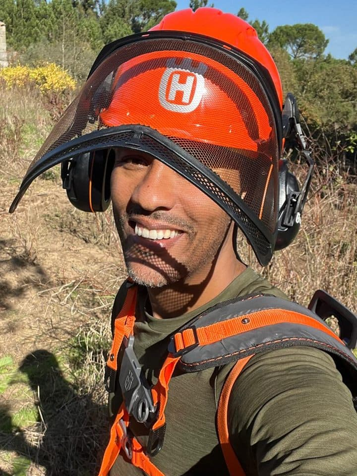
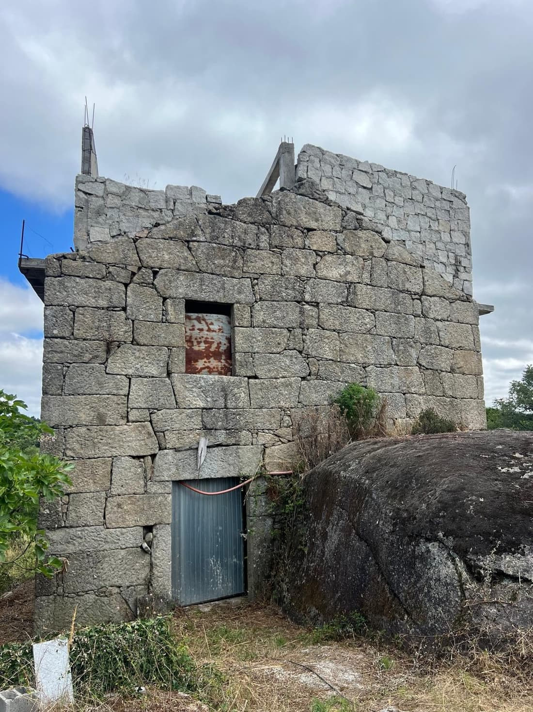
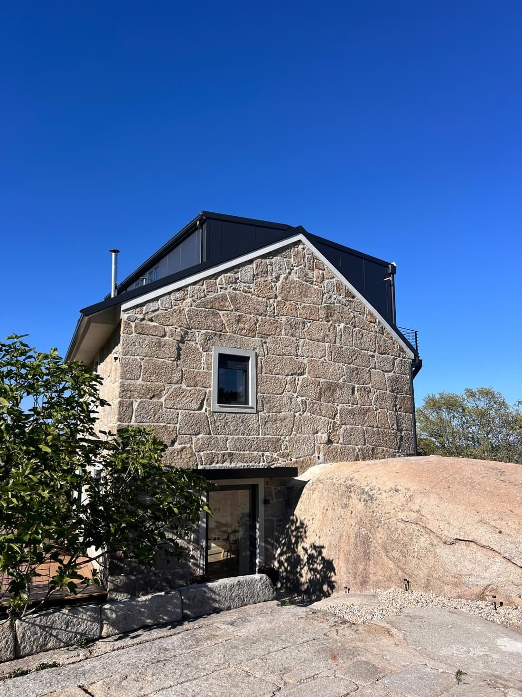
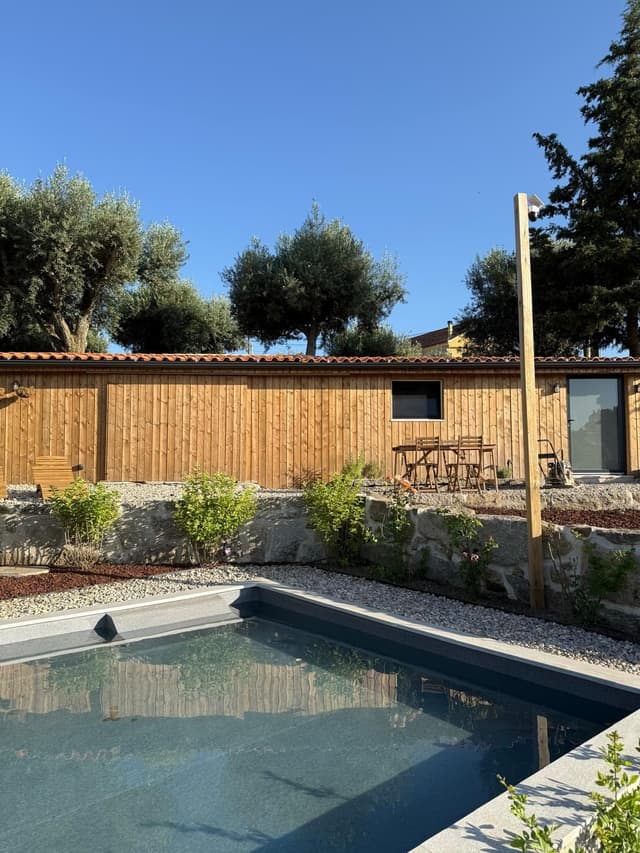
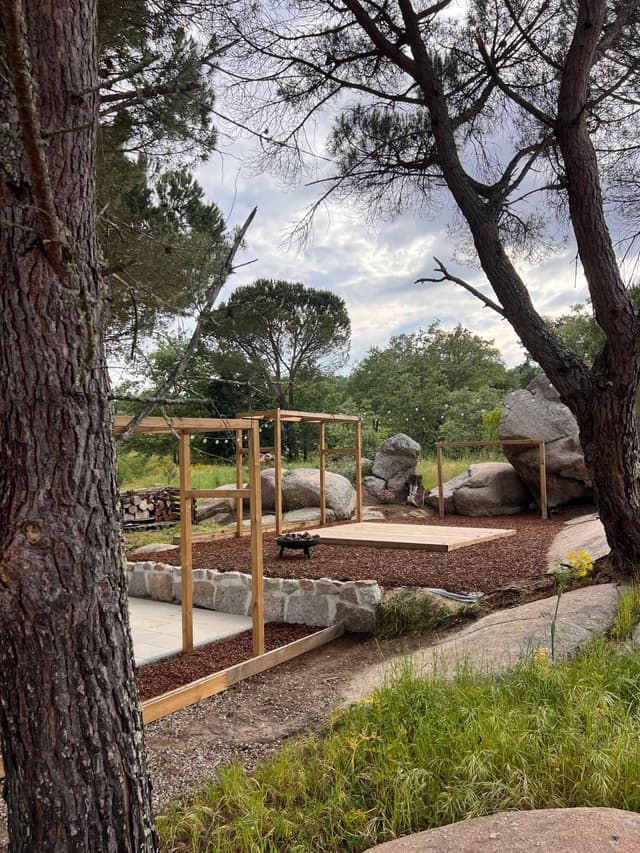
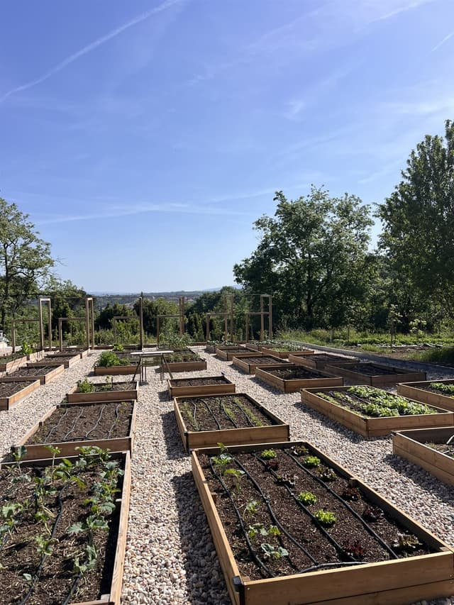
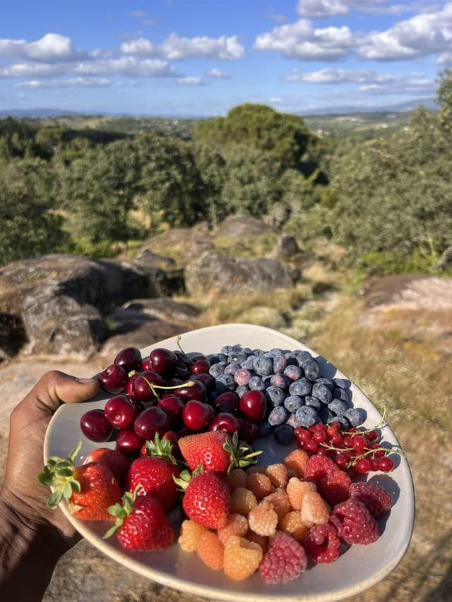
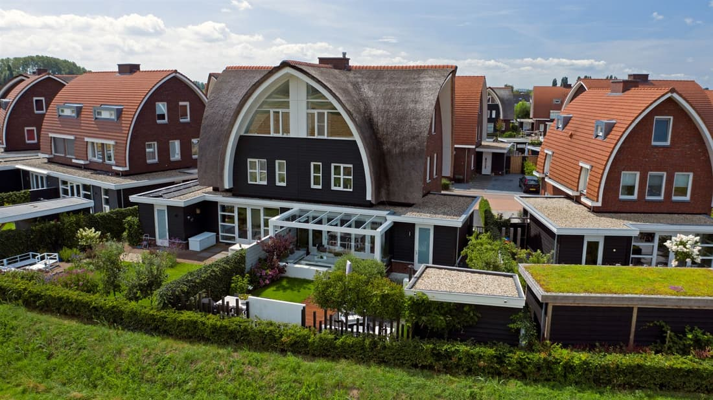
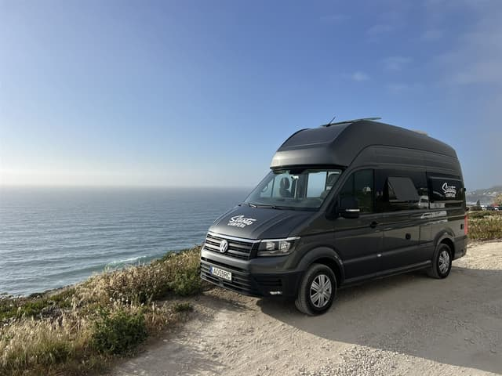

Who I am
I'm Mwata. I have built a new life abroad twice.
I had a good job and a comfortable home in the Netherlands, but something felt missing. A course helped me clarify the life I really wanted, and in 2021 I moved to Bali with only two bags. I built a life there from the ground up: a consultancy company, a newly built house and a local inspection business. After three years, however, my picture changed. That led me to build my second life in rural central Portugal.
I made this Blueprint because, although I had help with individual parts, nobody guided me from the first idea through all the decisions that followed. I did not need someone to decide what my life should be. I needed someone to tell me what to check first, based on real experience. That is what I wrote down in this Blueprint.
From my life into the workbook
What I faced: which region of Portugal, and which piece of land?
What I did: I travelled for two months in a campervan and viewed 25 plots. What surprised me was how connected I felt to one region, and not at all to another.
What I learned: you only find out on the ground. Go as a tester, not a tourist.
Where it is in the Blueprint: Step 2, Explore: test it in real life before you decide.






My own journey: still a work in progress, but the idea from two years ago is now real.
Read my full story
- 2020
Selling the house
I sold my house in the Netherlands to travel the world. Then COVID stopped those plans. A course helped me clarify what I really wanted.
- Bali
Two bags, a new life
During a two-month sabbatical in Bali, I finally had room to think. I wrote down a life near the sea, in a warm climate, where I could run my own business and help people. Back home, I left my job, sold what I still owned and moved to Bali with two bags. I started a consultancy, bought a house, and later started my own inspection business.
- Three years later
A new picture
Bali changed, and so did I. I missed being creative: building things and working in a garden. A YouTube channel about living more self-sufficiently set me thinking about another move.
- April 2024
The third plot
I travelled through Portugal in a campervan, exploring the regions and visiting plots I had shortlisted. I had not planned to buy on that trip. But when I saw the third plot, I knew it was the one.
- August 2024
Signing
I signed the purchase agreement. My money plan was already in place, so I was not afraid to commit. By the end of that year, the land was officially mine.
- Today
Living it
I live on my land in rural central Portugal, surrounded by nature, with enough projects to keep me creative for years. It is not finished, and it does not have to be. It is real.


My house in the Netherlands, sold in 2020 · inspection work in Bali · the campervan trip through Portugal.